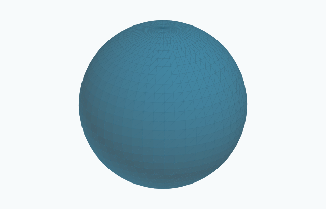

§ 2.9 Round shrinking spheres (Colding–Minicozzi II, 2009; Drugan–Lee–X. H. Nguyen, 2017)2643D15A6912
Earliest recorded reference: (first arXiv submission).
Paper credits and chronology
Paper credits are chronological and include every author of the cited papers. They identify sources, not exclusive discovery credit. Background-only citations do not determine the date of this example. A classical example may predate the references recorded here.
Throughout this collection, the normalized self-shrinker equation is $\vec H=-X^\perp /2$, and a normalized shrinker $\Sigma $ generates $M_ t=\sqrt{-t}\, \Sigma $, $-\infty <t<0$. The standard examples appear in [CM12], pp. 757–759, and [DLN2018], Section 3.3, PDF p. 8.
5D6AFC4ECF1B
For an integer $n\geq 1$, an extinction time $T\in \mathbb R$, and a center $a\in \mathbb R^{n+1}$, the exact family is
The centered normalized slice is $S^ n(\sqrt{2n})$ at $t=-1$.
These are smooth compact embedded hypersurfaces without boundary, complete and proper, with topology $S^ n$ and full rotational symmetry. The case $n=1$ is the shrinking circle in the plane.
With outward normal and $H=\operatorname {div}\nu $, all principal curvatures are $1/\sqrt{2n(T-t)}$. Thus the flow is strictly convex, $H=\sqrt{n/(2(T-t))}$ and $|A|^2=1/(2(T-t))$. It becomes extinct at $a$ in a Type I singularity at time $T$.
The round sphere is entropy stable and $F$-stable, where $F$-stability allows the Gaussian center and scale to vary. These are the stability notions in [CM12], Theorems 0.12 and 0.16; stability of Gaussian area with center and scale fixed is a different question.
The three-dimensional picture is the exact surface for $n=2$; for other dimensions a round profile represents the symmetry reduction.

Drag to rotate. Use the zoom buttons, or focus the drawing and use arrow keys and + / −.
Exact formula. The normalized sphere in R3 has radius 2. This is the n=2 member of the family. Open drawing · Numerical references and creditsAmbient space, topology, embeddedness and entropyShrinking circle · Euclidean plane ℝ² · Embedded
Ambient space
Euclidean plane ℝ²
Topology
Circle S¹
Embeddedness
Embedded: The round spheres, including the planar circle, are embedded hypersurfaces.
Compactness
Compact
Surface genus
Not a surface
Topological ends
0 (compact)
Entropy
Exact formula: λ = √(2π/e) ≈ 1.52035.
Gaussian area
Exact formula: F₀,₁ = λ for the normalized shrinker. λ = √(2π/e) ≈ 1.52035.
Round two-sphere · Euclidean space ℝ³ · Embedded
Ambient space
Euclidean space ℝ³
Topology
Sphere S²
Embeddedness
Embedded: The round spheres, including the planar circle, are embedded hypersurfaces.
Compactness
Compact
Surface genus
0
Topological ends
0 (compact)
Entropy
Exact formula: λ = 4/e ≈ 1.47152.
Gaussian area
Exact formula: F₀,₁ = λ for the normalized shrinker. λ = 4/e ≈ 1.47152.

Comments
Comments are not enabled yet.